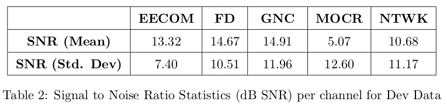

FS-3 Challenge Data

Figure shows the Stages of the Mission
The Stages 1, 5 and 6 were high impact mission-critical events which is ideal for the development of the 100-hour Challenge Corpus. With the quality of speech data varying between 0 and 20 dB SNR in this challenge corpus, the channel variability and complex interactions across all five channels of interest are mostly encapsulated in these 100 hours. The multichannel data are chosen from the major events given below:
- Lift Off (25 hours)
- Lunar Landing (50 hours)
- Lunar Walking (25 hours)
These landmark events have been found to possess rich information from the speech and language perspective.five channels out of the 29 channels were picked since it had the the most activity over the selected events.
- Flight Director (FD)
- Mission Operations Control Room (MOCR)
- Guidance Navigation and Control (GNC)
- Network Controller (NTWK)
- Electrical, Environmental and Consumables Manager (EECOM)
The personnel operating these five channels (channel owners/primary speakers) were in command of the most critical aspects of the mission, with additional backroom staff looping in for interactions with the primary owners of this channel.

The distribution of total speech content in each of the channels for every event has been given in the table above. Total speech content in the challenge corpus amounts to approximately 36 hours.
To make sure there is an equitable distribution of data into training, evaluation, and development sets for the challenge tasks, we have categorized the data based on noise levels, amount of speech content, and amount of silence. Due to the long silence durations, and based on importance of the mission, the speech activity density of the corpus varies throughout the mission.
The above table above is a general analysis of the Challenge data. Even though the Researchers are not provided with the channel information of Train, Test and Dev Sets, they may be able to make inferences by computing SNR’s for each file.

Figure 2: Probability Distributions of decision parameters for Train, Dev, and Eval sets.
All decision parameters for 100 hours of audio streams are calculated individually. These parameters are then normalized to generate degradation scores across the 100 hours. These scores are time-aligned across 5 channels and averaged to provide a single degradation score per 30-minute time chunk. The above figure shows the probability distributiions of decision parameters for Train, Dev, and Eval sets. This displays that even when the overall degradation across multiple channels are large, due to the variances in channel characteristics, the distributions for Train, Dev, and Eval sets have similar means, but differing distributions.

Table 3: Duration Statistics of audio segments for ASR track2.
Shorter utterance durations and larger variations in speaker durations are portrayed in Table 3, illustrating the general duration statistics of audio segments provided for the ASR track2 task.

Table 4: General statistics for the SID task..
Simialar statistics are shown for the SID task in Table 4. The mean, median, minimum, and maximum values for cumulative speaker durations, and individual speaker utterances are all expressed in seconds.

Table 5: Baseline Results for Development and Evaluation Sets.
Table 5 shows the baseline results for Fearless Steps Challenge: Phase 02 for Development and Evaluation Sets

Table 6: Baseline Results for Development and Evaluation Sets.
Table 6 shows Comparison of the best systems developed for all FS-1 and FS-2 challenge tasks. Relative improvement of top-ranked system per task in FS-2 over FS-1 is illustrated.